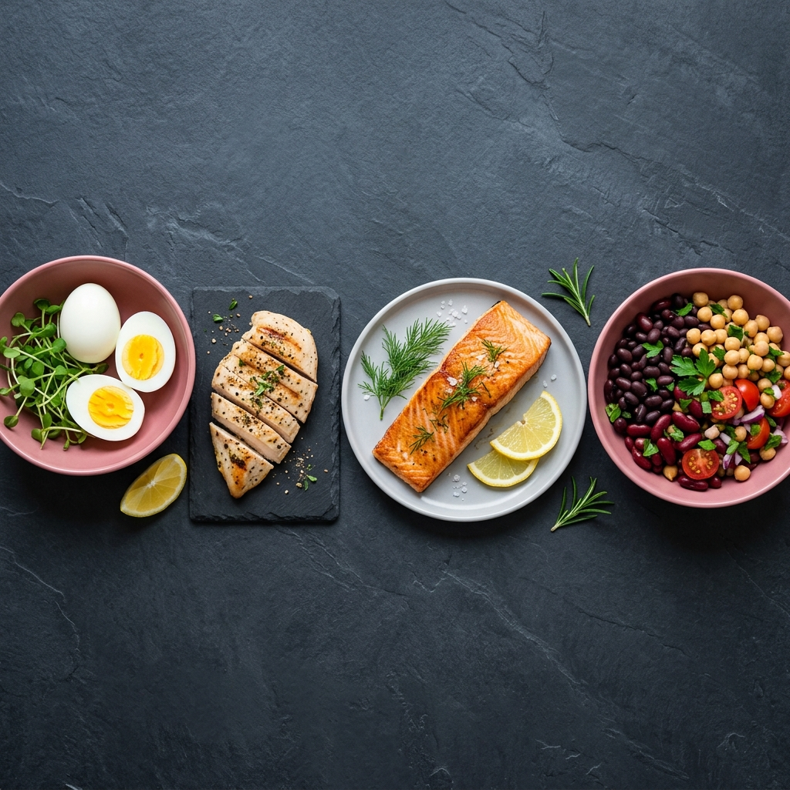

Varför behöver kroppen protein?

Protein är ett av de tre makronäringsämnena (tillsammans med kolhydrater och fett) och det enda som kroppen inte kan lagra i någon nämnvärd utsträckning. Det innebär att du behöver tillföra det varje dag – annars “äter” kroppen upp sin egen muskelmassa för att få tag på de byggstenar den behöver.
Det händer i kroppen varje sekund
Din kropp befinner sig i ett konstant tillstånd av omsättning. Gamla proteiner bryts ner och återvinns, medan nya byggs upp. Varje dag bryts uppemot 200–300 gram kroppseget protein ned – och lika mycket behöver återuppbyggas. En otillräcklig kost innebär att kroppen går på underskott, vilket på sikt leder till förlust av muskelmassa, sämre immunförsvar och trötthet.
Långt mer än muskler
Den vanligaste missuppfattningen är att protein bara handlar om att bygga muskler. Visst är skelettmuskulaturen kroppens största proteinreservoar, men protein fyller en otrolig mängd andra funktioner:
- Enzymer: Nästan alla enzymer i kroppen är proteiner. Utan dem stannar ämnesomsättningen av.
- Hormoner: Insulin, glukagon, tillväxthormon – alla är proteinbaserade signalmolekyler.
- Immunförsvaret: Antikroppar är proteiner. En proteinnäring stärker din förmåga att bekämpa infektioner.
- Transport: Hemoglobin, proteinet som bär syre i blodet, är ett av kroppens mest kritiska transportproteiner.
- Struktur: Kollagen – det mest förekommande proteinet i kroppen – håller samman hud, brosk, senor och ben.
Mättnad och viktkontroll
Av de tre makronäringsämnena är protein det klart mest mättande. Det beror på att protein stimulerar frisättningen av mättnadshormoner (som GLP-1 och PYY) och dämpar hungerhormoner (som ghrelin) mer effektivt än både fett och kolhydrater.
I praktiken innebär det att en frukost med ägg och kvarg håller dig mätt till lunch, medan en frukost med enbart toast och sylt lämnar dig hungrig redan klockan 10. Studier har konsekvent visat att en kost med högre proteinandel leder till spontant minskad kaloriintag – utan att du aktivt behöver räkna kalorier.
Protein och åldrandet
Med åldern minskar kroppens förmåga att syntetisera muskelprotein – ett tillstånd som kallas sarkopeni. Forskning visar att äldre vuxna (50+) behöver relativt mer protein per kilogram kroppsvikt för att bibehålla muskelmassan jämfört med yngre. Det är en av anledningarna till att kostråd för seniorer ofta rekommenderar 1,2–1,6 g/kg, snarare än den minimala 0,8 g/kg som gäller för yngre, inaktiva individer.
Redo att hitta de billigaste proteinkällorna? Öppna PPK-kalkylatorn →